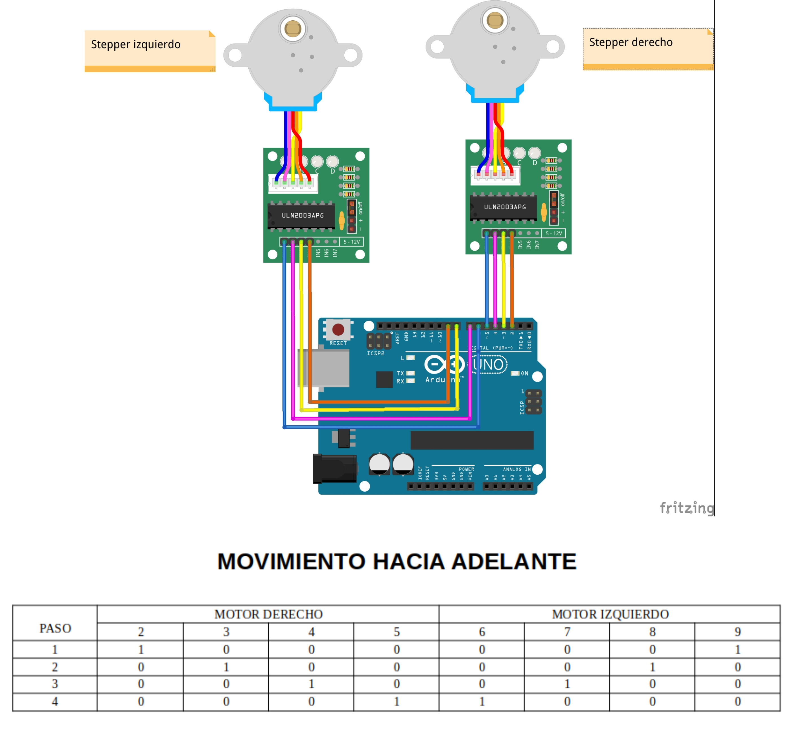

Movimiento hacia adelante
Introducción
Si hiciste el ejemplo anterior, estás preparado para crear distintos programas que permitan a tu Rupertobot moverse hacia adelante y hacia atrás, o moverse en cualquier sentido.
Adelante
Si comprendiste el programa del ejemplo anterior, entenderás ahora que para que tu Rupertobot se mueva hacia adelante, la rueda derecha debería girar en sentido horario, mientras que la izquierda debería hacerlo en sentido antihorario. Esto implica que iremos activando los pines 2->3->4->5 en este orden para el motor derecho, y al mismo tiempo excitaremos 9->8->7->6 para el motor izquierdo:

Programa en MasayloBlockly
La cosa no se complica demasiado. Sólo ten en cuenta que los grupos de cuatro pines se excitan en órdenes contrarios:

Programa tu Arduino
Si prefieres tirar del IDE de Arduino, el código básico sería:
void setup() {
pinMode(2, OUTPUT);
pinMode(3, OUTPUT);
pinMode(4, OUTPUT);
pinMode(5, OUTPUT);
pinMode(6, OUTPUT);
pinMode(7, OUTPUT);
pinMode(8, OUTPUT);
pinMode(9, OUTPUT);
}
void loop() {
digitalWrite(2, HIGH);
digitalWrite(3, LOW);
digitalWrite(4, LOW);
digitalWrite(5, LOW);
digitalWrite(6, LOW);
digitalWrite(7, LOW);
digitalWrite(8, LOW);
digitalWrite(9, HIGH);
delay(2);
digitalWrite(2, LOW);
digitalWrite(3, HIGH);
digitalWrite(4, LOW);
digitalWrite(5, LOW);
digitalWrite(6, LOW);
digitalWrite(7, LOW);
digitalWrite(8, HIGH);
digitalWrite(9, LOW);
delay(2);
digitalWrite(2, LOW);
digitalWrite(3, LOW);
digitalWrite(4, HIGH);
digitalWrite(5, LOW);
digitalWrite(6, LOW);
digitalWrite(7, HIGH);
digitalWrite(8, LOW);
digitalWrite(9, LOW);
delay(2);
digitalWrite(2, LOW);
digitalWrite(3, LOW);
digitalWrite(4, LOW);
digitalWrite(5, HIGH);
digitalWrite(6, HIGH);
digitalWrite(7, LOW);
digitalWrite(8, LOW);
digitalWrite(9, LOW);
delay(2);
}
Descarga el programa
Hacia adelante, programa para MasayloBlockly
Hacia adelante, programa para IDE de Arduino